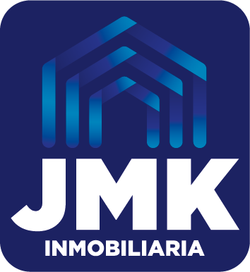

Versión: 1.0
Fecha de emisión: 2 de diciembre de 2025
Marco legal principal: Ley N.° 7786 (Ley sobre Estupefacientes, Sustancias Psicotrópicas, Drogas de Uso No Autorizado, Actividades Conexas, Legitimación de Capitales y Financiamiento al Terrorismo), Artículo 15 y Artículo 15 BIS, y su normativa reglamentaria conexa (Reglamento de los artículos 15 bis y 15 ter, Acuerdo SUGEF 11-18 y demás disposiciones del CONASSIF aplicables).
Aprobado por: Gerencia General
El presente Código de Ética establece los principios, políticas y procedimientos que rigen la actuación de Servicios Inmobiliarios Real Estate JMK S.R.L. ("Inmobiliaria JMK" o "la Agencia"), su Gerencia, agentes, corredores, colaboradores y cualquier persona que actúe en su nombre, en el desarrollo de actividades de intermediación, promoción, corretaje y venta de bienes inmuebles en Costa Rica.
Su propósito es asegurar el cumplimiento estricto de las obligaciones que la legislación costarricense impone a la Agencia como sujeto obligado en materia de prevención de la legitimación de capitales, el financiamiento al terrorismo y el financiamiento de la proliferación de armas de destrucción masiva (en adelante, "LC/FT/FPADM"), así como fijar estándares de integridad, transparencia y debida diligencia frente a clientes, contrapartes y autoridades.
Este Código aplica a todas las operaciones de compraventa, alquiler, promoción, desarrollo o intermediación inmobiliaria que realice la Agencia, sin distinción de monto, tipo de propiedad o forma de pago.
De conformidad con el Artículo 15 de la Ley 7786, las personas físicas o jurídicas que se dedican de forma profesional y habitual a la compra y venta de bienes inmuebles —incluyendo corredores, intermediarios, promotores y desarrolladores de proyectos inmobiliarios— deben cumplir las mismas obligaciones que la Ley impone a las entidades financieras en el Artículo 14, en lo que resulte compatible con su naturaleza. Estas obligaciones incluyen, entre otras, el deber de inscripción y sujeción a la supervisión de la Superintendencia General de Entidades Financieras (SUGEF), bajo un enfoque basado en riesgo definido por el Consejo Nacional de Supervisión del Sistema Financiero (CONASSIF).
El Artículo 15 BIS extiende obligaciones equivalentes a otras actividades y profesiones no financieras designadas (APNFD) que, por su naturaleza, están expuestas a riesgos de LC/FT/FPADM, y faculta al CONASSIF y a la SUGEF para reglamentar los procedimientos de inscripción, categorización y supervisión de los sujetos obligados por ambos artículos.
En virtud de lo anterior, Inmobiliaria JMK reconoce su condición de sujeto obligado inscrito y supervisado por la SUGEF en materia de prevención de LC/FT/FPADM, y asume de manera directa las obligaciones legales y reglamentarias derivadas de dicha condición, incluyendo el deber de reportar operaciones sospechosas ante la Unidad de Inteligencia Financiera (UIF) del Instituto Costarricense sobre Drogas (ICD).
Previo a formalizar cualquier relación de negocios u operación de compraventa, alquiler o cesión de bienes inmuebles, Inmobiliaria JMK aplicará una política de debida diligencia del cliente que incluye, como mínimo:
Cuando el cliente actúe en nombre de un tercero, a través de una sociedad, fideicomiso o cualquier otra estructura jurídica, Inmobiliaria JMK identificará al beneficiario final de la operación, entendido como la persona física que, directa o indirectamente, ejerce el control efectivo o se beneficia económicamente de la transacción. La Agencia no aceptará negociar con sociedades que emitan o mantengan acciones al portador, en línea con las restricciones aplicables a los sujetos obligados por los artículos 14, 15 y 15 BIS de la Ley 7786.
Cuando el cliente sea una persona física o jurídica extranjera, o no residente fiscal en Costa Rica, Inmobiliaria JMK aplicará un nivel reforzado de debida diligencia y solicitará, además de la identificación básica indicada en la Sección 4, la siguiente documentación de respaldo:
Esta documentación permite a Inmobiliaria JMK verificar razonablemente la capacidad económica del cliente y el origen lícito de los fondos destinados a la operación inmobiliaria, conforme a los deberes de debida diligencia reforzada aplicables a clientes no residentes.
Requisito obligatorio antes de iniciar cualquier gestión de compra, venta o alquiler: todo cliente de Inmobiliaria JMK debe completar y firmar el formulario de Declaración de Debida Diligencia / Conozca a su Cliente disponible en el siguiente enlace:
https://forms.realestatejmk.com/ezcifu
Mediante dicha firma, el cliente declara bajo su responsabilidad la veracidad de la información suministrada (identidad, actividad económica, origen de los fondos y, cuando aplique, identificación del beneficiario final), y autoriza a Inmobiliaria JMK a conservar y, en caso de ser requerido por la autoridad competente, remitir dicha información en cumplimiento de la Ley 7786 y su normativa conexa.
Ningún agente de la Agencia formalizará una oferta, promesa de compraventa, contrato de corretaje o cierre de negociación sin contar previamente con este formulario debidamente completado.
Para la ejecución de determinadas gestiones —tales como estudios registrales, formalización notarial, trámites bancarios de financiamiento, avalúos o transferencias de fondos— Inmobiliaria JMK puede apoyarse en terceras entidades y profesionales externos (entidades financieras supervisadas, notarios públicos, casas de avalúos, entre otros), quienes a su vez pueden tener sus propias obligaciones de debida diligencia como sujetos obligados o entidades reguladas.
Sin perjuicio de lo anterior, la intervención de dichas terceras entidades no traslada ni delega la responsabilidad legal de Inmobiliaria JMK como sujeto obligado inscrito y supervisado por la SUGEF conforme al Artículo 15 de la Ley 7786. En consecuencia, Inmobiliaria JMK asume directamente, con recursos y personal propios, el deber de análisis y de reporte de operaciones u actividades sospechosas ante la Unidad de Inteligencia Financiera (UIF-ICD), independientemente de que la operación involucre o no la participación de un tercero.
Todo colaborador o agente de Inmobiliaria JMK que identifique una operación, intento de operación o patrón de conducta que resulte inusual, carente de justificación económica o jurídica aparente, o que genere sospecha razonable de estar vinculado con legitimación de capitales, financiamiento al terrorismo o financiamiento de la proliferación de armas de destrucción masiva, deberá comunicarlo de inmediato a la persona de enlace u oficial de cumplimiento de la Agencia, según corresponda.
La persona de enlace u oficial de cumplimiento evaluará el caso y, de ser procedente, elaborará y remitirá el Reporte de Operación Sospechosa (ROS) directamente a la Unidad de Inteligencia Financiera del Instituto Costarricense sobre Drogas, conforme a los plazos y formatos que establezca dicha autoridad. Este reporte es una obligación propia e indelegable de Inmobiliaria JMK como entidad supervisada, y se mantiene vigente aun cuando en la operación intervengan terceras entidades.
Queda terminantemente prohibido a cualquier colaborador o agente de la Agencia informar al cliente, contraparte o a terceros no autorizados que una operación ha sido objeto de análisis interno o de un Reporte de Operación Sospechosa. El incumplimiento de esta disposición constituye una falta grave conforme al régimen disciplinario interno de la Agencia y puede generar responsabilidad legal personal conforme a la Ley 7786.
Inmobiliaria JMK mantendrá vigente su inscripción ante la SUGEF conforme al Artículo 15 de la Ley 7786 y al Acuerdo SUGEF 11-18, y designará y mantendrá actualizada ante dicha Superintendencia a la persona de enlace o, cuando su categorización de riesgo así lo determine, al Oficial de Cumplimiento responsable de la aplicación de este Código, la atención de requerimientos regulatorios y la coordinación de los reportes ante la UIF-ICD.
La documentación de debida diligencia del cliente, los soportes de las operaciones realizadas y los análisis internos de operaciones inusuales o sospechosas se conservarán por el plazo que establezca la normativa vigente, y estarán disponibles para su exhibición ante la SUGEF, la UIF-ICD o cualquier otra autoridad competente que los requiera.
Todo colaborador y agente de Inmobiliaria JMK recibirá capacitación periódica sobre los alcances de este Código, la Ley 7786 y su normativa conexa, así como sobre las señales de alerta propias de la actividad de intermediación inmobiliaria, con el fin de fortalecer la cultura de prevención de LC/FT/FPADM dentro de la Agencia.
El incumplimiento de las disposiciones de este Código por parte de cualquier colaborador o agente de Inmobiliaria JMK dará lugar a las medidas disciplinarias internas que la Gerencia estime pertinentes, sin perjuicio de las responsabilidades civiles, administrativas o penales que puedan corresponder conforme a la legislación costarricense.
Este Código de Ética entra en vigencia a partir de su fecha de emisión y será revisado y actualizado periódicamente por la Gerencia de Inmobiliaria JMK, o cuando se produzcan reformas legales o reglamentarias en materia de prevención de LC/FT/FPADM que así lo requieran.